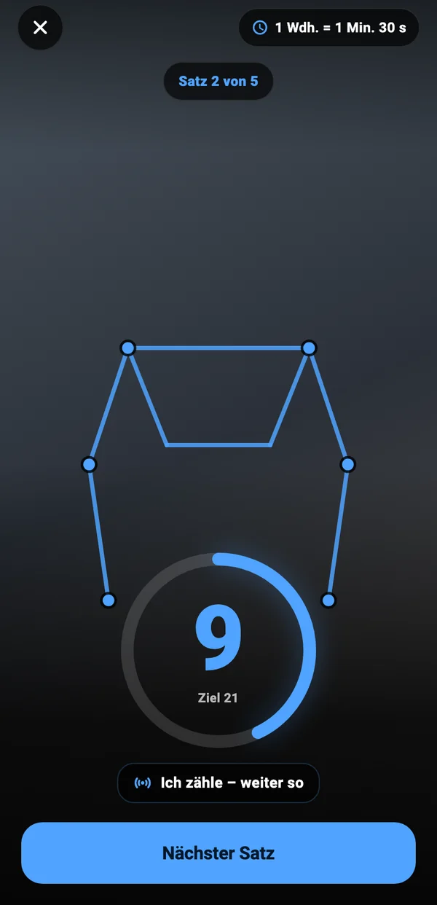
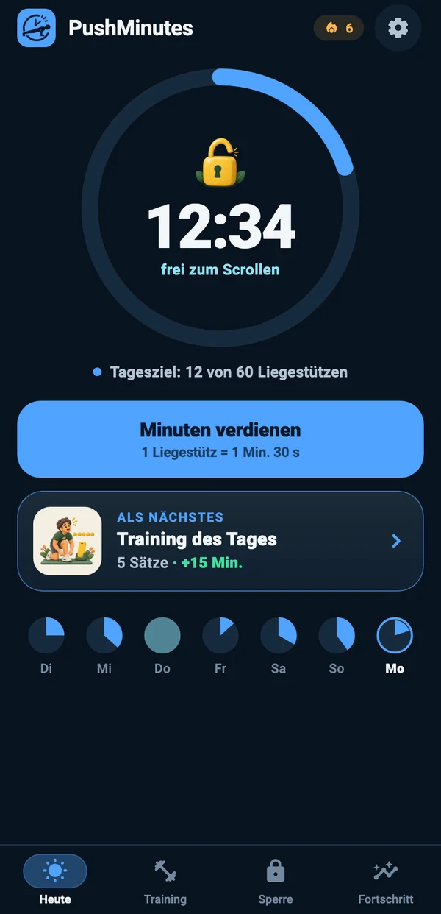
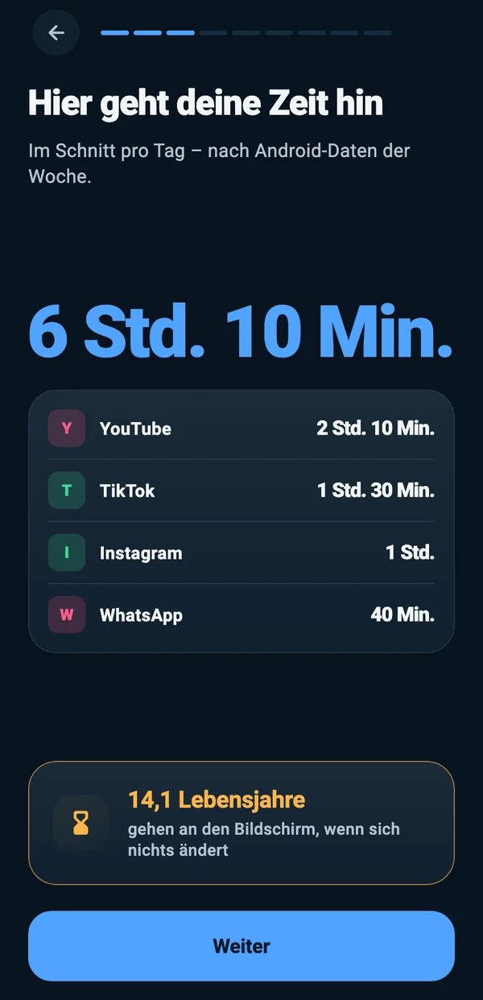
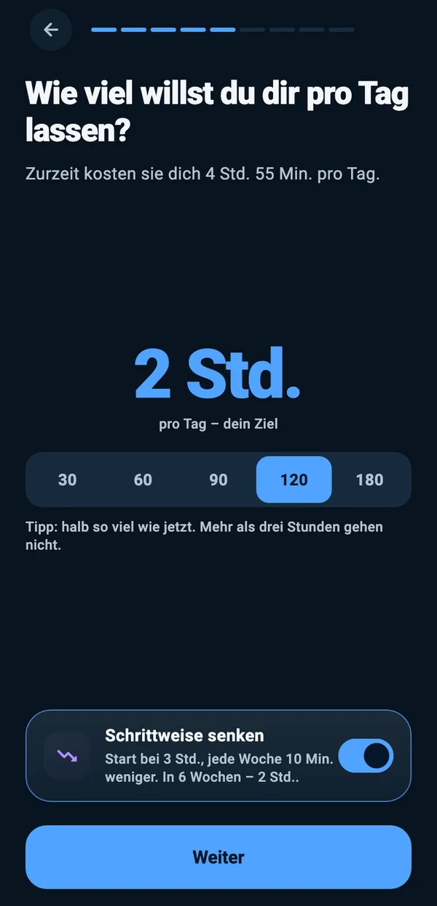
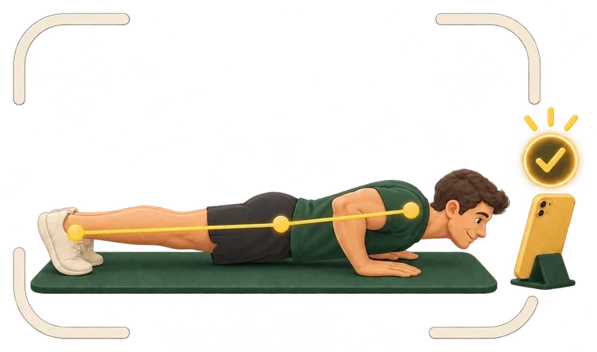
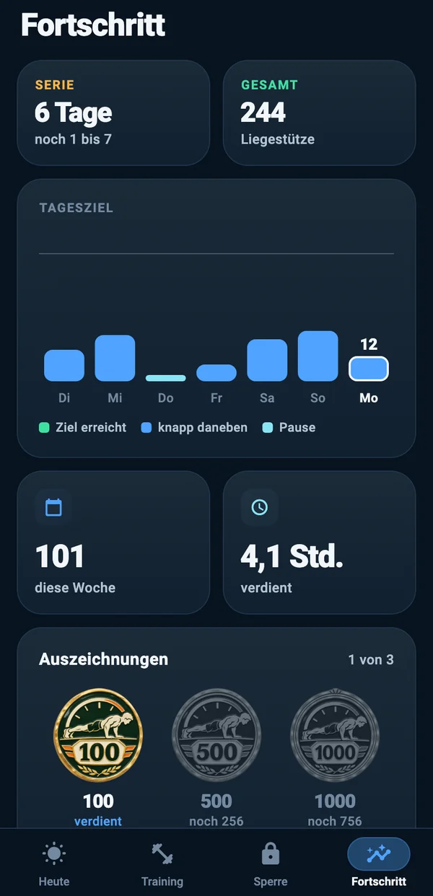

Scrollen?Erst verdienen
PushMinutes sperrt die Apps, die deine Zeit fressen. Liegestütze und Kniebeugen öffnen sie wieder – die Handykamera zählt jede Wiederholung.
Android 7.0 und neuer · 14 Tage kostenlos, ohne Karte



Jede Wiederholung bringt Minuten.
Der Preis ist einfach: dein Tageslimit geteilt durch dein Tagesziel. Ziel geschafft – das ganze Limit gehört dir. Weniger gemacht – weniger Minuten.
So funktioniert es
Drei Schritte bis zur ersten verdienten Minute.
- 01
Sieh, wohin die Zeit geht
PushMinutes liest die Nutzungsstatistik von Android und zeigt die echte Zahl – pro App und pro Tag.

- 02
Entscheide, wie viel bleibt
Wähle ein Tageslimit zwischen 30 Minuten und 3 Stunden. Die App startet nah an deinem jetzigen Wert und kann das Limit um 10 Minuten pro Woche senken.

- 03
Verdien es dir am Boden
Stell das Handy etwa zwei Meter entfernt auf. Die Kamera zählt Liegestütze oder Kniebeugen, jede Wiederholung bringt Minuten.
Ehrlich gezählt
Nur ganze Wiederholungen zählen.
Der Zähler wurde an echten Aufnahmen eingestellt – auch an Versuchen zu schummeln.
Zählt
- Ganze Liegestütze: Brust runter und wieder hoch
- Tiefe Kniebeugen – zwei Kniebeugen zählen wie ein Liegestütz
- Liegestütze auf Knien – in einem eigenen Einsteigermodus
- Handy vor dir oder seitlich
Zählt nicht
- Halbe Wiederholungen
- Nicken in die Kamera
- Liegestütze auf Knien, die als normale durchgehen sollen



Gewohnheit
Gebaut, damit du dranbleibst.
- Tagesziel
- Schaffst du es, ist dein ganzes Tageslimit offen. Ein Ziel für Liegestütze und Kniebeugen.
- Serien mit Pausentag
- Ein verpasster Tag pro Woche unterbricht die Serie nicht.
- Strenger Modus
- Die Sperre auszuschalten kostet mindestens 120 Liegestütze in einer Einheit. In einem schwachen Moment klappt das nicht.
- Notfallminuten
- Einmal am Tag, wenn du das Handy wirklich brauchst.
- Gesparte Zeit
- Du siehst, wie viel weniger du scrollst als vorher.

Privatsphäre
Nichts verlässt dein Handy.
- Es wird kein Video aufgenommen oder gesendet. Die Haltungserkennung läuft auf dem Gerät.
- Kein Konto, keine Anmeldung.
- Keine Werbung, keine Analyse-Tools.
- Die App selbst hat keinen Internetzugang.
14 Tage kostenlos. Ohne Karte.
Danach braucht PushMinutes ein kostenpflichtiges Abo mit automatischer Verlängerung. Den Preis siehst du in der App, bevor du zahlst. Kündbar jederzeit in Google Play.
Fragen
Kurz beantwortet.
Nimmt die Kamera mich auf?
Nein. Jedes Bild wird auf dem Handy ausgewertet und sofort verworfen. Nichts wird gespeichert oder gesendet.
Was, wenn ich keinen einzigen Liegestütz schaffe?
Fang mit Liegestützen auf Knien oder mit Kniebeugen an. Das Tagesziel richtet sich nach deinem Niveau.
Kann ich die Sperre einfach ausschalten?
Ja. Im strengen Modus kostet das aber mindestens 120 Liegestütze in einer Einheit. Ob du den strengen Modus willst, entscheidest du bei der Einrichtung.
Welche Apps lassen sich sperren?
Jede App auf deinem Handy: Social Media, Video, Spiele, Browser. Messenger bleiben offen, solange du es nicht anders einstellst.
Gibt es eine Version für das iPhone?
Noch nicht. Sie ist in Arbeit.
Ist das gesundheitlich unbedenklich?
Liegestütze und Kniebeugen sind körperliche Belastung. Bei gesundheitlichen Bedenken sprich zuerst mit einer Ärztin oder einem Arzt. PushMinutes ist kein Medizinprodukt.